This section is concerned with the structural remains of the Celtic lands, from standing stones to round towers.
There have been impressive structures built in the Celtic realms from earliest times. There are, around the world, a series of similar huge rock structures which are commonly called megaliths (from the Greek mega = large, lith = stone). They come in many sizes and structures, but all are impressive in their construction and age.
Just who the megalithic builders were, and what purpose their structures served, is something of a mystery. While a few of them may have been erected during the time of the Celts, most of them had been standing long before the Celts arrived. Those megaliths must have filled the Celts with the same sense of awe and antiquity that inspires us today.
The Celts built a number of dwellings and fortifications throughout the ages, some large and grand, such as Hill-forts, and others small and mundane. One cannot deny, however, that these early Celtic structures had an influence on later architectural styles and designs.
In the period immediately following the Ice Age, Ireland and Britain were very desirable areas for human and animal settlement. The glaciers had left Britain connected to the European continent, allowing easy access to and from the area until 6,500 BCE, when it became an island once and for all. [22]
The first definite traces of humans in Ireland come later, in about 6,000 BCE, when settlers came across the straits from Scotland to northern Ireland. They lived in small round or rectangular huts with a stone base, with roofs likely to be made of straw. [19]
The period of 3,000 to 2,000 BCE was a period of many migrations of peoples filtering through Ireland and Britain, and this is reflected in the variety of styles of megalithic structures to be found in the area.
Court cairns are currently believed to be the oldest type of megalithic tombs, dating from 3,000 to 2,500 BCE. The basic layout consists of a long chamber divided into a number of burial slots. A semi-circular "courtyard" encircled by standing stones was possibly the scene for pre-burial funeral rites. The top of the tomb was covered by a large stone mound, supported by upright stones at the edges.
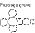
Passage graves were set inside stone or earthen mounds, although many have been bared by erosion. They often have burial chambers to the sides, and are covered by flat stones or elaborate corbelled roofs. But most intriguingly, they are often carved with elaborate geometric designs, which still baffle all attempts at analysis.
Dolmens (from the Breton meaning "stone table") are a group of three or more upright stones topped by a capstone, weighing as much as 100 tons. Two of the standing stones were often positioned as "portals" into the tomb. To raise the capstone, the builders pushed it up the earthen mound around it; today most of the mounds have eroded. Dolmens were probably built by the descendants of the Court Cairn builders around 2,000 BCE.
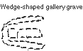
Gallery graves are burial chambers often surrounded by a special stone arrangement originally covered by an earthen mound. They were built shortly after 2,000 BCE, possibly by a new wave of immigrants.
Stone and wooden circles were constructed during a wide range of times. They may have been used as ritual sites, astronomical devices, territory markers and cattle scratching posts.
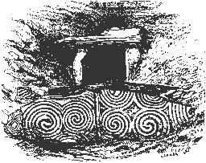
Newgrange is one of the finest examples of a passage grave in the world. It is a mound 36 feet high and 300 feet in diameter. Outside the mound is an enclosure of standing stones up to eight feet high, of which 12 of the estimated 35 original stones survive.
Newgrange is in the Boyne Valley, County Meath, Ireland, a area that has been fertile for millennia. There are many ancient tombs in the area, and Newgrange is probably the tomb referred to in Irish Mythology as the Brú na Bóinne [I].
Some historians believed Newgrange had Egyptian origins until their theories were silenced by dating the megalithic structure to a time much earlier than the pyramids.
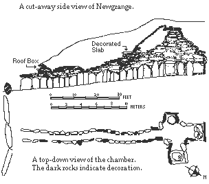
Newgrange's corbelled roof reaches up to 20 feet above the chamber of the center. The rocks of the roof were grooved to carry water away from the interior, leaving it completely dry year- round in an otherwise wet climate.
You'll notice circular stone basins in opposite side chambers in the top view diagram. These basins are found in some Irish passage graves, and were used to hold bones or crematory ashes as well as funeral offerings. The eastern stone basin has two smooth circular depressions of unknown function.
The circle of stones around Newgrange averages 340 feet in diameter. Only twelve stones remain of an estimated 35.
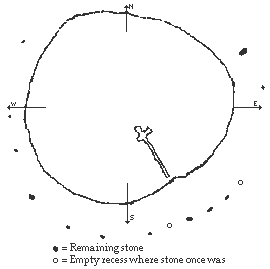
A curb of 96 stones stands against the entire periphery of the mound. Many of these curbstones are ornamented, but the three curbstones exposed even prior to excavation seem to be the most elaborate.
An expanse of fallen granite and quartz stones surrounded the mound when it was discovered. These rocks are hypothesised to have once formed a retaining wall ascending vertically from the curbstones. This wall has been recently reconstructed.
A wooden henge has been uncovered a few meters to the northeast of Newgrange.
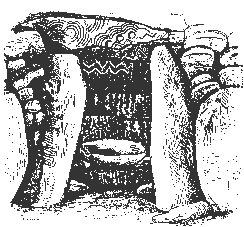
The passage and chamber run 79 feet in length, only about a third of the mound's diameter. No other tombs have been found, despite excavation attempts.
The passage is about 3 feet wide, and begins at about 5 feet high to end in the corbelled chamber ceiling of 20 feet.
Although the tomb has been open for more than 200 years, an excavation in 1967 turned up burnt and unburnt bones of at least two people in the floor of the chamber. With the bones were items including pendants, a clay bead, some bone pins and a bone chisel.
Certainly one of the most exciting and surprising aspects of Newgrange is its astronomical alignment. The function of the roofbox, above the entrance to Newgrange, baffled scientists for ages until the morning of the Midwinter solstice, on December 21, 1967.
On this morning, the sun is able to penetrate the angle of the roof-box and crawl down the passage, illuminating engraved details along the walls until it reaches the inner chamber. This annual light show is a total of 17 minutes.
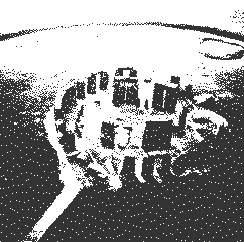
Stonehenge is one of the most famous and mysterious prehistoric sites in the world. The imposing ring of stones standing solemnly on Salisbury Plain strikes a resonant chord in the imagination.
Its name is derived from hengen [A], "hanging" or "gibbet." This is a reference to the incredibly finely engineered cross- pieces on top of the upright stones. [2]
Stonehenge was built in three phases of increasing sophistication over a very long period of time, beginning around 3,200 BCE. The area also has many barrows, as well as hill-side chalk figures, suggesting relatively heavy population by an architecturally-diverse culture.
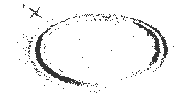
Stonehenge began as a large round wooden building encircled by a simple ditch and bank sometime between 3,200 and 2,700 BCE. The bank at this time was about six feet high, 20 feet wide and 320 feet in diameter, although it has eroded considerably since then.
The building was probably a thatched roof mortuary for storing the dead before cremation.
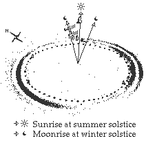
Although the monument's main entrance faced south, it isn't likely that Stonehenge yet had any astronomical significance. [20]
At some time between 2,700 and 2,200 BCE, a strange series of 56 pits, called "Aubery holes" after their discoverer, John Aubery, were dug in a circle inside the mound. Although many of the pits had cremations in them, archaeologists have shown that the pits were dug long before the ashes were deposited, so the pits probably had a different original purpose.
Among the speculations is that the holes were a calculator for predicting eclipses of the moon. It is more likely, however, that the Aubery holes were used for putting offerings into.
The Aubery Holes coincide in time with a change in pottery style, the so-called "Beaker" pottery, which may or may not indicate an arrival of a new group of humans. [20]
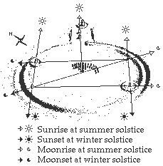
Major innovations arrived at Stonehenge between 2,200 and 2,000 BCE: circles of stones were erected on the site. These massive blue- stones are from the Preseli mountains in South Wales, some 200 miles away. Scholars are left in awe and wonder of how these ancient peoples moved them.
Some hypothesise that the rocks were moved in boats up the Bristol Channel and local rivers, and across land on sleds.
It has been recently noted that glacial action, rather than human effort, may have moved the stones most of the way to Stonehenge. This theory would explain why better rocks in the Preseli mountains weren't chosen by Stonehenge builders. [20]
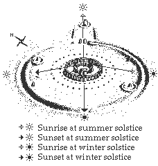
The tall upright stones we now associate with Stonehenge were added between 2,000 and 1,600 BCE. These sarsens were quarried at the Marlborough Downs 17 miles away, stand as tall as 13 feet, and are sunk four to five feet into the ground.
The exactness of the positioning of the stones is incredible: despite the unlevel ground at Stonehenge, the lintels atop the sarsens are level, demonstrating the great ability of the builders to measure and adjust for the inexact landscape and materials.
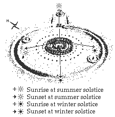
Equally amazing is the precise fitting and cutting of the stones and the joints that fit together so well. The design, the lack of similar stone structures, and the more common use of wood suggests that the builders may have been carpenters. [20]
Three even larger sarsens, often called trilithons, were then assembled in the center, and the bluestones were moved inward to form an ellipse, surrounded by the trilithons.
Stonehenge was now as complete as it would ever be. It has lost about half of its stones since then. [20]
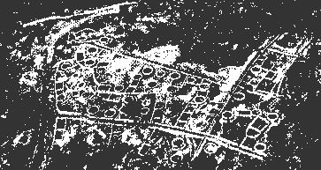
By the second and first centuries BCE the Celts began creating large fortified settlements, which Caesar called oppida [L] ("towns"). These cities, usually found on hills and containing up to 2,000 inhabitants, clearly contrast with the earlier small-scale settlements of the Celtic age of expansion. Oppida seem to have originated in the eastern Celtic lands in the second century BCE, and became widespread within a couple of generations.
Eastern oppida commonly consisted of a small, defended hilltop surrounded by settlements. Western oppida had much larger enclosed areas, which often included residences, barns and sometimes even farms. [29]
One reason for the emergence of the oppida was the increasing pressure from outside forces upon the Celtic tribes, which effectively caused a reversal of the Celtic expansion. In the east, this was the threat of the Dacians under Burebista during the first century BCE. In central and western Europe, large numbers of migrating Germanic tribes invaded Celtic lands. [29]
Roman expansion directly threatened Celtic lands. Southern France was annexed in 125-124 BCE, and the exodus of over 300,000 Celts from Switzerland through Roman lands in 58 BCE gave Caesar a justification for conquering Gaul, which took seven years. Caesar wrote of increasingly centralised tribal organisations, and noted that capturing a tribe's oppida usually caused the entire tribe to surrender. [29]
Another reason for the development of the oppida was the renewal of Mediterranean trade. Wine, oil and metalwork of Mediterranean origin appear in Celtic areas starting in the second century BCE. Celts, in turn, sold finished and unfinished iron to the Romans. Salt pork and woolen textiles were imported from Gaul before the Roman conquest, according to Strabo. [29]
The complexities of trade and craft specialisation may have contributed to increasing social stratification in Celtic society. Agriculture, the foundation of Celtic life, was also strained by the demands of this social and economic shift. [29]
Some catastrophic event may have happened in Britain in the first century BCE, because a large number of Celtic hill-forts were abandoned at this time. They were later hurriedly reoccupied and refortified at the onset of the Claudian invasion. [42]
The early Celtic Christian church developed a highly intricate art form known as the "High Cross," which is still a popular motif in religious and funerary art and architecture. Some scholars hypothesise that it is a synthesis of the Christian cross with the earlier pagan solar symbol, the (sometimes quartered) circle.
At its highest point of development, the High Cross was virtually a sermon in stone, covered in carvings of enactments of biblical stories and symbols of Christendom. It seemed to have developed, however, from seventh-century stone slabs with intricate interwoven lacing, but without circles or biblical scenes. The circle was incorporated by the eighth century, and scenes from the Old Testament started slowly creeping onto crosses in the ninth century. By the 11th century, figures stood out of the cross in high relief on one or both of the cross faces. [19]
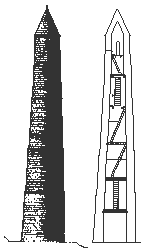
The arrival of the Vikings in 795 CE caught the Irish by surprise. Monasteries, which had become centres of wealth as well as learning, were prime targets for the raids. To be fair, though, many monasteries were also raided by other Irish (even by other monks jealous of religious possessions!).
This spurred Irish architects to create the round tower. Although towers were used primarily as bell towers to call monks from the fields to prayer, it was also doubtlessly used as a defence for the monks and their treasures.
The doorway entrance was about ten or more feet above the ground, probably so that monks could climb up a rope or ladder and subsequently withdraw it. The towers are five or more stories high, with a window on each story and four windows at the top level, capped by a conical roof. [19]